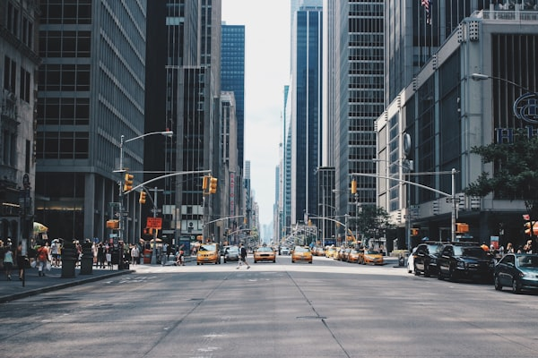

9/3
07:00
07:00
莫高窟10/3 13:15 已预约
请在 12:45 抵达数字展示中心。参观结束后视时间决定是否直接前往鸣沙山，不硬赶日落。
官方：莫高窟参观预约网小程序 / 官网



以行程日期计算的最早可买日。节假日规则可能临时调整：请在放票前一周再次核对官方小程序/公众号，不通过“代抢”或非官方渠道购买莫高窟。
| 景点 / 游览日 | 最早购买时间 | 渠道与执行提示 |
|---|---|---|
| 莫高窟 10/3 13:15 | 9/3 07:00 | 已预约 13:15 场；请 12:45 抵达数字展示中心。参观结束后视时间决定是否前往鸣沙山，不硬赶日落。 |
| 鸣沙山月牙泉 10/3 | 9/18 起 | 当前常规提前15天线上实名预约；用“鸣沙山月牙泉”公众号或“游敦煌”小程序，优先锁定下午入园。若国庆公告改规则，以公告为准。 |
| 七彩丹霞 10/2 | 平台放票即买 | 官方未公布固定提前天数；建议9/30起每天查看官方公众号/正规 OTA，最迟10/1锁定。2026年门票价已调为70元，区间车另计。 |
| 翡翠湖 10/4 | 10/1 核验后购买 | 不记录固定提前天数。大柴旦8月仍有地震活动；目前正常开放，但须在出发前72小时和当天复核景区、道路公告，再购票。 |
| 茶卡盐湖 10/5 | 平台放票即买 | 官方支持线上实名购票，但未公布固定提前天数；建议9/28起每日查看“茶卡盐湖/西矿智旅”官方渠道，勿购买非“天空之镜·茶卡盐湖”票。 |
| 青海湖二郎剑 10/5 | 9/29 00:00 | “智游青海湖”小程序常规可提前7天预约；如当天项目或车流不理想，按行程预案取消，确保回西宁。 |